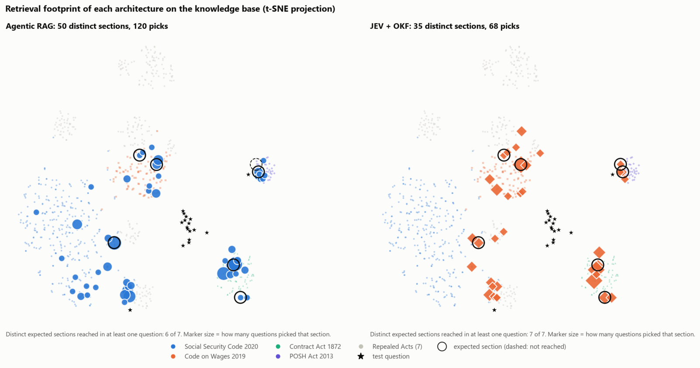
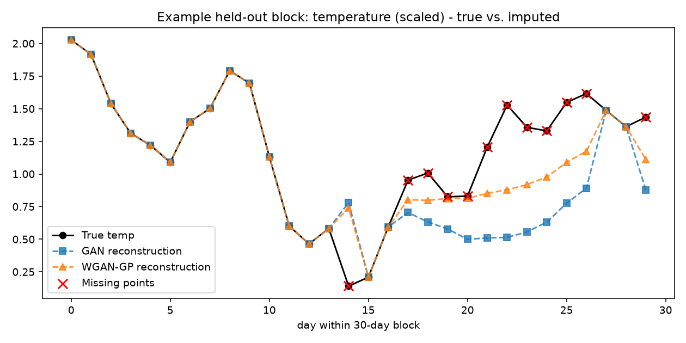
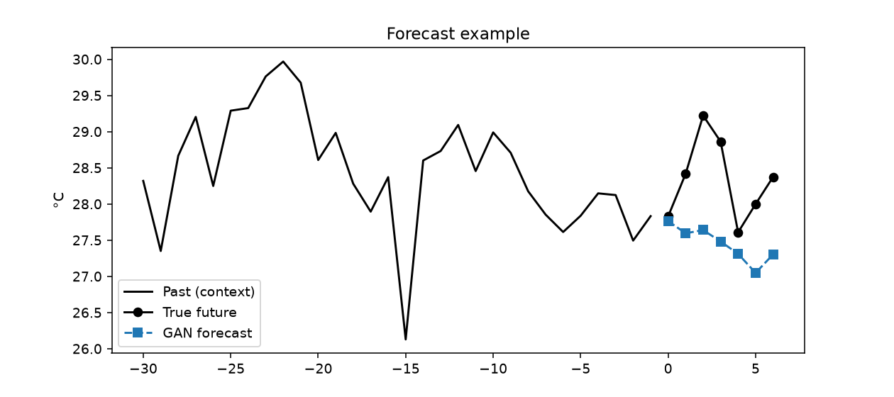
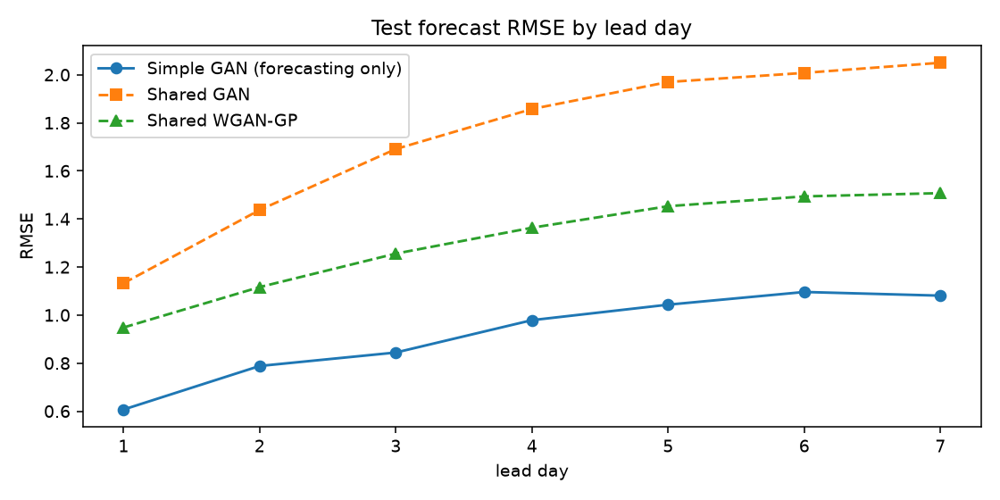

LLM token usageLexAgent
−81%
Fewer LLM tokens per answer when a typed decision model takes over the agent's intermediate decisions.
I build RAG systems
that are measured, grounded & reliable.
AI Engineer, ML Engineer & Data Scientist with a mathematics foundation. I work on LLM & retrieval systems, AI model evaluation and deep-learning forecasting, and I judge my work by the numbers.
| role | AI Engineer · ML Engineer · Data Scientist |
| focus | RAG · LLM eval · Time-series DL |
| current | AI Analyst @ Handshake AI |
| education | M.Sc. Data Science, VIT · 9.02 |
| foundation | B.Sc. Mathematics · Top 5% |
| location | Chennai, India |
| open_to_work | True |
Headline numbers from my projects and academics. Details for each are in the sections below.
Fewer LLM tokens per answer when a typed decision model takes over the agent's intermediate decisions.
Query-routing accuracy, up from 72% for the agentic RAG baseline: +22 points.
7-day temperature forecast (task-specific GAN) on 76 years of ERA5 climate data for Chennai.
B.Sc. Mathematics CGPA, Loyola College. M.Sc. CGPA 9.02 at VIT.
Each project shows the problem, the system I built and how I measured it. The charts are interactive.
An employee uploads a contract or HR policy and asks: "Can my company enforce the non-compete after I resign?" A useful answer must find the right clause and the governing section of Indian employment law, and cite both. A confident answer built on the wrong law is worse than no answer.
LLM router → LLM query rewriting → hybrid retrieval (e5 embeddings + BM25, reciprocal rank fusion) → LLM answer → LLM fact-check.
A typed decision model makes routing, relevance and sufficiency choices while navigating an Open Knowledge Format bundle of linked section and topic pages. The LLM writes only the final answer.




Weather records have gaps, and forecasts need complete history. Can one shared GAN generator fill the gaps and forecast, and is that more efficient than training a separate GAN for each task? I judged "efficient" on accuracy, parameter count and training time.
One run, seed 42, on CPU. The Simple GAN uses a separate generator for each task, so its parameters and time cover both. Next step: adding non-GAN baselines (persistence, climatology, ARIMA).
From pure mathematics to applied AI, plotted on one timeline.
Introduction to MongoDB
Data Structures in C++
Each skill is linked to the project, role or coursework where I used it. Hover over or drag a node, or pick a filter.
Everything on this site, condensed for your ATS and hiring panel.
I'm open to Data Science, Machine Learning and LLM/RAG engineering roles. I'm happy to walk you through any project, the code behind it, or how I'd approach your problem.